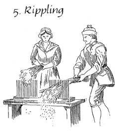
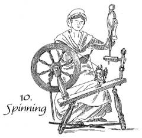

|

 
See
the steps involved in making linen from flax.
|
|
The Ballard household was a
nest of economic enterprise. Everyone worked. Ephraim surveyed, drew his
maps, wrote his survey reports, met clients, collected taxes, farmed,
and cut wood for the household. Martha grew and prepared herbs and simples,
practiced midwifery, treated the ill, knitted, made and mended much of
the family's clothing, and attended to her housework. The boys farmed,
cut wood and timber, and helped at the mills. When the girls were old
enough, Martha brought in a loom for weaving, and the family launched
into textile production.
Weaving had evolved from a
full-time men's occupation to part-time women's work. Not all women wove
nor did all women spin. Instead, community networks of women bought and
traded fibers, labor, skills, and finished goods to acquire cloth for
their families' clothing. Neighbor women taught the Ballard girls to weave
. Women with looms borrowed and loaned equipment, such as the parts of
looms called slays. In Martha's diary we see many such daily exchanges.
The women in the Ballard household
produced textiles during the years before the girls married. They grew
and harvested flax. The family's sheep gave wool. All the women in the
household spun and prepared yarn and thread for weaving. The girls learned
to weave. Weaving gave the girls a useful skill and also contributed to
the household income. Martha did not weave, but the girls wove while Martha
was off practicing her midwifery. Sometimes they bought cloth and thread,
and they bought raw cotton by the pound.
The Ballards had worked out
an efficient system. Yet the beginnings of mechanization foretold changes.
As we know, mechanization would eclipse household textile production within
the next generation.
Both the film A Midwife's
Tale and chapter two of the book A Midwife's Tale deal with
textile production.
|